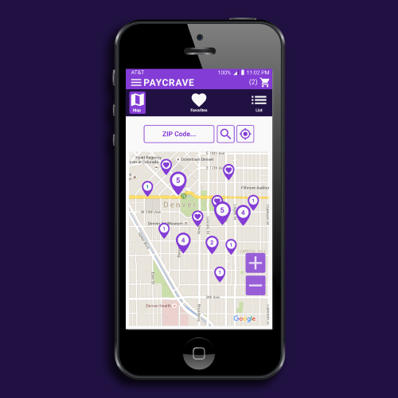
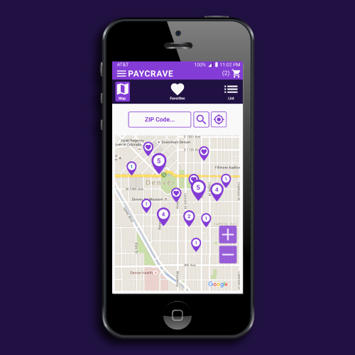
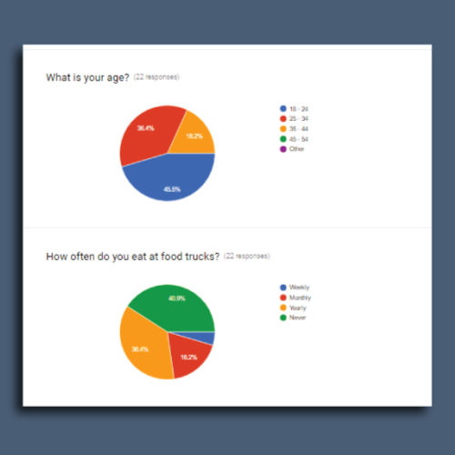
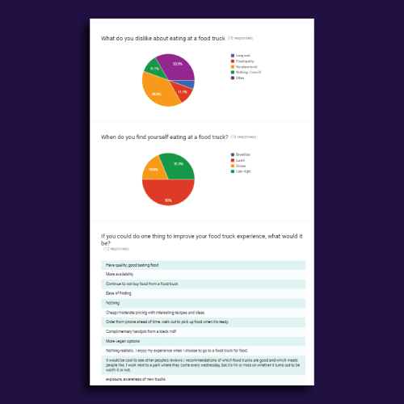
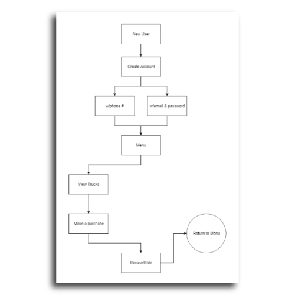
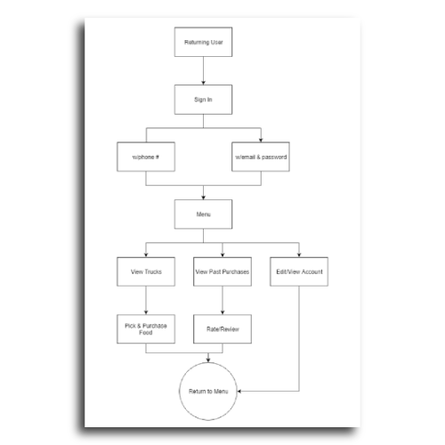
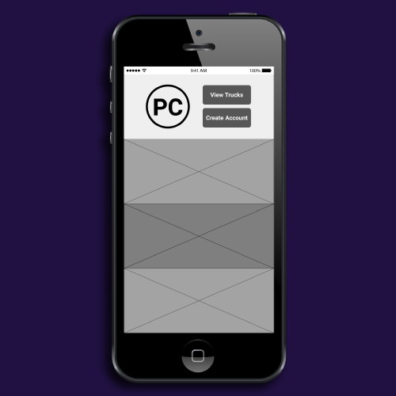
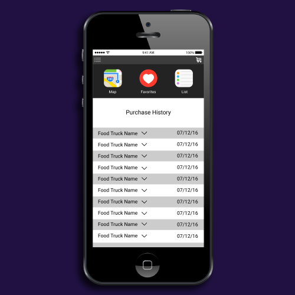
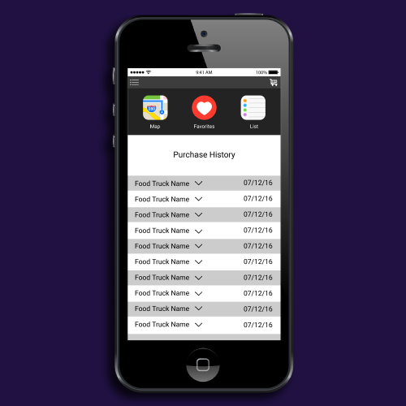

PAYCRAVE
 

Overview
Food trucks are becoming increasingly popular in metropolitan areas, but those who use them frequently know of their common inconveniences. The most obvious issue is finding the truck. Unless you know of the hot spots, it's up to chance. Most people don't have much spare time in their lunch break so finding a place quickly is a necessity. Paycrave enhances its users' food truck experience in a number of ways. First it allows them to locate food trucks by GPS cutting out any time spent physically searching. Second, Paycrave allows its users to make purchases online for pick up. This removes any long line from the equation speeding up the process significantly. The user also has access to menus, ratings and profiles of various food trucks allowing them to effectively investigate prior to ordering. Paycrave is a great app for saving time on your lunch break.
   Process
When I began working on Paycrave I first researched the general process of using a food truck. I found in reviews a few consistencies. Accurately displaying food truck locations seemed to be at the top of the list. Another great concern was long lines. These issues were also confirmed in online forms I sent our to get in touch with the core user's necessities. An accurate map and online purchase options would eliminate both of those problems. Once I knew why the site's general purpose was I created the user stories. From the user stories I created the wire frames and then did user testing to streamline the process. With the foundation complete I moved on to the design phase. I created the logo, color palette and typefaces. Once the design was complete I tested it for a final time. After reviewing the feedback I make any necessary changes and consider it ready for coding.
 

Conclusion
Effective research allowed me to find the needs and frustrations of the core user. This information allowed me to compensate for those needs and frustrations. The end product is one that gives the user exactly what they need without any confusing filler.